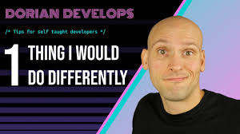

Started this recently, but I can't find a way to stay motivated/grind it out as you talk so much about in your videos. I don't know if I'm just not interested in coding or what it is but it always seems so difficult to get myself to start and I kinda fell off doing it after starting. Any advice?
I'm working through odin and, you were on point about setting up your coding environment! I set up virtual box download x ubuntu and somehow upgraded to ubuntu 20 something? The whole process took me about 7 hours because I'm not tech savvy. I managed to learn how to delete it all and re-install it in an hour. It wasn't all bad because I found your channel! Very helpful and thank you!!
Maybe you could do The Odin Project's projects? I'm creating the Google Homepage and I have no idea if I'm structuring my code the right way or if there's an easier way to do things
11Reply

High School DROPOUT to SELF-TAUGHT Programmer !Dorian Develops28K views . 3 months ago
10 ways Linux is just better!Linus Tech Tips2.5M views . 1 year ago
Relaxing Guitar MusicYellow Brick Cinema107M views . 5 year ago
How Languages Shape The Way We ThinkTed6.5M views . 2 year ago
I just completed the Todo App in the JavaScript section of the Full-Stack JavaScript Path.
Working on the odin project right now ! I will definitely like to see you review the full-stack javascript section.
Started this recently, but I can't find a way to stay motivated/grind it out as you talk so much about in your videos. I don't know if I'm just not interested in coding or what it is but it always seems so difficult to get myself to start and I kinda fell off doing it after starting. Any advice?
I'm working through odin and, you were on point about setting up your coding environment! I set up virtual box download x ubuntu and somehow upgraded to ubuntu 20 something? The whole process took me about 7 hours because I'm not tech savvy. I managed to learn how to delete it all and re-install it in an hour. It wasn't all bad because I found your channel! Very helpful and thank you!!
Maybe you could do The Odin Project's projects? I'm creating the Google Homepage and I have no idea if I'm structuring my code the right way or if there's an easier way to do things